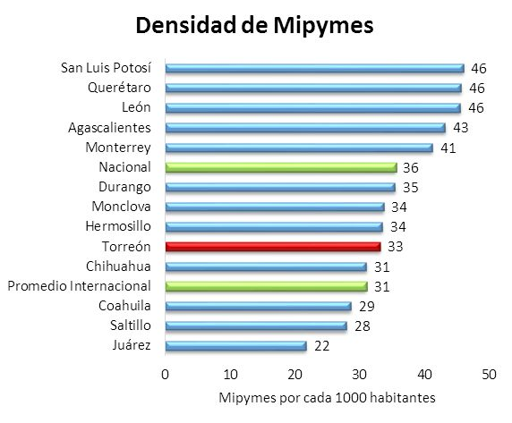
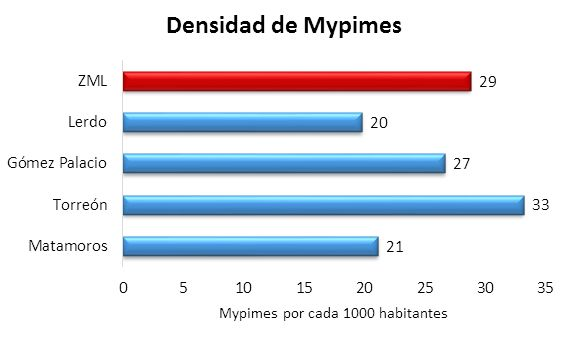
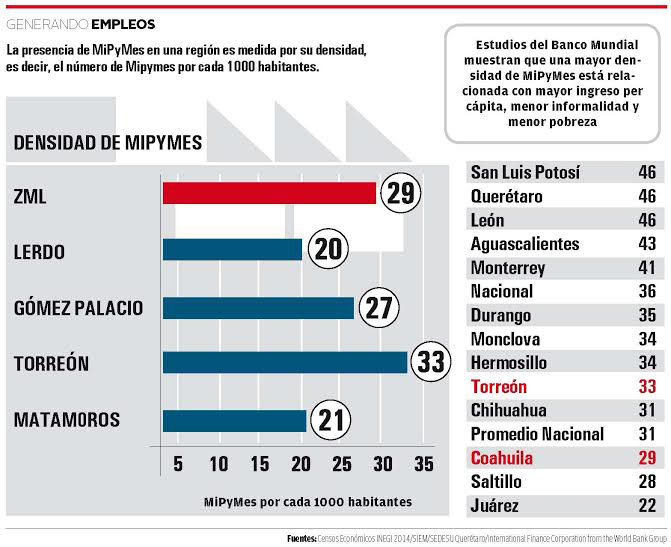

De acuerdo a su clasificación por rango de empleados, 98% de las empresas formales en la Zona Metropolitana de La Laguna son MiPyMes (micro, pequeñas y medianas empresas), 90% de las cuales son micro, es decir, emplean de 0 a 10 personas.
La estadística no es ninguna sorpresa, las MiPyMes representan entre el 95 y 99% de las organizaciones en el mundo y emplean más de un tercio de la fuerza laboral global. El indicador con el que realmente se mide la presencia de MiPyMes en una región es su densidad, o en este caso, el número de Mipymes por cada 1000 habitantes.
En Torreón la densidad de MiPyMes es de 33 por cada 1000 habitantes y, a pesar de ser superior a la densidad promedio internacional de 31 por cada 1000, es menor a la densidad de Mipymes en México, la cual es de 36 por cada 1000 habitantes. En la Zona Metropolitana de La Laguna la densidad es de 29 por cada 1000 habitantes.

Estudios del Banco Mundial muestran que una mayor densidad de MiPyMEs está relacionada con mayor ingreso per cápita, menor informalidad y menor pobreza, factores importantes en la competitividad de una región.
Además, las MiPyMes permean tecnología e innovación en una economía de manera más simple y con menor requerimiento de capital por parte del sector público. Es por esto que las economías avanzadas las consideran la columna del desarrollo y sus gobiernos ven la creación de MiPyMEs como una herramienta para la generación de empleos y la reducción de pobreza.

El superar el promedio internacional no significa que no podemos mejorar nuestro indicador, existen casos en México como los de Querétaro y San Luis Potosí, ambas con una densidad de 46 MiPyMes por cada 1000 habitantes. Para aumentar nuestra densidad de MiPyMes es necesario crear un ambiente apto para su desarrollo con acciones dirigidas a combatir sus principales obstáculos: la falta de financiamiento, la corrupción, las barreras de entrada y salida del sector formal y las cargas fiscales.
Aunque la mayoría de estas políticas son de carácter federal, hay otras medidas que los gobiernos locales y estatales pueden tomar para aumentar la creación de MiPyMes. Por ejemplo, las regulaciones para minimizar los días de apertura de empresas y la obtención de permisos, así como la disminución en el número y costo de trámites, facilitan la incorporación a la formalidad, elevando la densidad de MiPyMes.

Otra estrategia es tomar como referencia las mejores prácticas de estados y ciudades exitosos. En Querétaro, la Secretaría de Desarrollo Sustentable (SEDESU) cuenta con programas para el desarrollo de proveedores del sector industrial y comercial, como los siguientes:
- Programas de difusión de la oferta: el objetivo de estos programas es la vinculación entre grandes empresas y proveedores regionales potenciales. El proceso cuenta con dos etapas:
- Encuentro de Negocios, en el cual las MiPyMEs se reúnen con las empresas compradoras para mostrar sus productos y negociar su oferta comercial;
- Venta de artículos de las MiPyMEs, en el que las empresas seleccionadas en la etapa uno ofrecen sus productos dentro de las tiendas y de acuerdo a los montos de venta la empresa compradora elige a sus proveedores.
- Desarrollo de proveedores: este programa es similar al de difusión de la oferta, con la diferencia de ir dirigido a los sectores industriales. El programa consiste en un encuentro de negocios de proveedores con grandes empresas en donde los proveedores regionales muestran sus productos.
- Asesorías y capacitaciones: SEDESU ofrece programas de asesorías a empresarios y emprendedores en sus proyectos de comercialización, además de brindar capacitaciones en coordinación con organismos especializados en ofrecer a las MiPyMEs herramientas para ser más competitivas.
- Proyectos con instituciones educativas: En convenio con universidades, alumnos de diseño industrial y gráfico, mercadotecnia, administración e ingenierías ayudan a MiPyMEs de la región a diseñar los empaques y etiquetas de sus productos, a mejorar la eficiencia en sus procesos, a determinar puntos de equilibrio y a desarrollar campañas publicitarias, entre otras actividades.
Independientemente del curso de acción –iniciativas de ley, centros de capacitación, desarrollo de proveedores-, comenzar la implementación de políticas para el desarrollo de las MiPyMEs de La Laguna es una necesidad inaplazable. Su contribución a la economía la debe de colocar dentro de las prioridades de los gobiernos y de todas las instancias económicas.
Infografía

Una versión de divulgación de este análisis apareció en Milenio Laguna
Fuentes
- Censos Económicos INEGI 2014
- SIEM
- SEDESU Querétaro
- International Finance Corporation from the World Bank Group